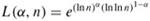
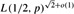

|
|
< Day Day Up > |
|
Niven and Zuckerman [231] provide an excellent introduction to elementary number theory. Knuth [183] contains a good discussion of algorithms for finding the greatest common divisor, as well as other basic number-theoretic algorithms. Bach [28] and Riesel [258] provide more recent surveys of computational number theory. Dixon [78] gives an overview of factorization and primality testing. The conference proceedings edited by Pomerance [245] contains several excellent survey articles. More recently, Bach and Shallit [29] have provided an exceptional overview of the basics of computational number theory.
Knuth [183] discusses the origin of Euclid's algorithm. It appears in Book 7, Propositions 1 and 2, of the Greek mathematician Euclid's Elements, which was written around 300 B.C. Euclid's description may have been derived from an algorithm due to Eudoxus around 375 B.C. Euclid's algorithm may hold the honor of being the oldest nontrivial algorithm; it is rivaled only by an algorithm for multiplication which was known to the ancient Egyptians. Shallit [274] chronicles the history of the analysis of Euclid's algorithm.
Knuth attributes a special case of the Chinese remainder theorem (Theorem 31.27) to the Chinese mathematician Sun-Ts u, who lived sometime between 200 B.C. and A.D. 200-the date is quite uncertain. The same special case was given by the Greek mathematician Nichomachus around A.D. 100. It was generalized by Chhin Chiu-Shao in 1247. The Chinese remainder theorem was finally stated and proved in its full generality by L. Euler in 1734.
The randomized primality-testing algorithm presented here is due to Miller [221] and Rabin [254]; it is the fastest randomized primality-testing algorithm known, to within constant factors. The proof of Theorem 31.39 is a slight adaptation of one suggested by Bach [27]. A proof of a stronger result for MILLER-RABIN was given by Monier [224, 225]. Randomization appears to be necessary to obtain a polynomial-time primality-testing algorithm. The fastest deterministic primality-testing algorithm known is the Cohen-Lenstra version [65] of the primality test by Adleman, Pomerance, and Rumely [3]. When testing a number n of length ⌈lg(n + 1)⌉ for primality, it runs in (lg n)O(lg lg lg n) time, which is just slightly superpolynomial.
The problem of finding large "random" primes is nicely discussed in an article by Beauchemin, Brassard, Crépeau, Goutier, and Pomerance [33].
The concept of a public-key cryptosystem is due to Diffie and Hellman [74]. The RSA cryptosystem was proposed in 1977 by Rivest, Shamir, and Adleman [259]. Since then, the field of cryptography has blossomed. Our understanding of the RSA cryptosystem has deepened, and modern implementations use significant refinements of the basic techniques presented here. In addition, many new techniques have been developed for proving cryptosystems to be secure. For example, Goldwasser and Micali [123] show that randomization can be an effective tool in the design of secure public-key encryption schemes. For signature schemes, Goldwasser, Micali, and Rivest [124] present a digital-signature scheme for which every conceivable type of forgery is provably as difficult as factoring. Menezes et al. [220] provide an overview of applied cryptography.
The rho heuristic for integer factorization was invented by Pollard [242]. The version presented here is a variant proposed by Brent [48].
The best algorithms for factoring large numbers have a running time that grows roughly exponentially with the cube root of the length of the number n to be factored. The general number-field seive factoring algorithm, as developed by Buhler et al. [51] as an extension of the ideas in the number-field sieve factoring algorithm by Pollard [243] and Lenstra et al. [201] and refined by Coppersmith [69] and others, is perhaps the most efficient such algorithm in general for large inputs. Although it is difficult to give a rigorous analysis of this algorithm, under reasonable assumptions we can derive a running-time estimate of L(1/3, n)1.902+o(1), where .
The elliptic-curve method due to Lenstra [202] may be more effective for some inputs than the number field sieve method, since, like Pollard's rho method, it can find a small prime factor p quite quickly. With this method, the time to find p is estimated to be .
|
|
< Day Day Up > |
|